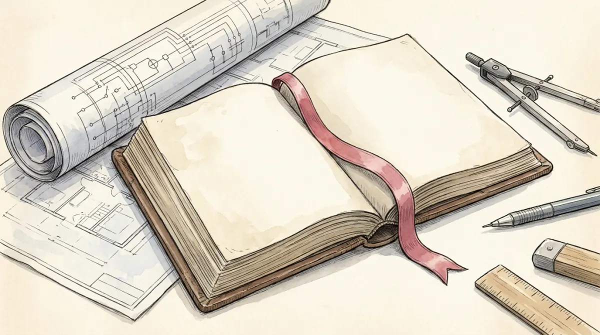

Before Via Larga 12 votes on anything, someone must have decided how voting works: who may call a meeting, how many votes carry a motion, what the administrator may spend alone. That prior document, boring and decisive, is the building's constitution. The course's definition: a constitution is a codified set of fundamental laws that determine law-making procedures and allocate powers among the main institutions of the State. It fixes the rules of the political game: who can stand for office, what powers office carries, what rights and duties citizens hold.
Five characteristics make a law "constitutional" rather than ordinary: it is fundamental (other laws derive from it), entrenched (harder to change than ordinary law), codified (written down, usually in one document), it allocates powers, and it defines rights and duties of both government and citizens. The standard anatomy has four parts: a preamble (the story the state tells about itself), a bill of fundamental rights, the institutional design of government, and the amendment procedures, the rules for changing the rules.
Two truths the course insists on holding together: constitutions shape how the game is played and how it ends, and constitutions are themselves results of fierce battles between groups. The rulebook is a peace treaty written by the winners of the last fight.
Modern liberal constitutions make a recognizable bundle of promises. Read them as answers to Poli-02's problem, controlling the one legitimate security company:
| Executive | Decides, implements, coordinates. Split across different figures: head of state (represents the state) and head of government (runs it), sometimes the same person, as the wiring section shows. |
|---|---|
| Legislature | The law-making body of elected representatives, under many names (parliament, congress, assembly), in one chamber (unicameral) or two (bicameral). Bicameralism comes in strong versions, where the upper house has real teeth (US, Germany, Switzerland), and weak ones. |
| Judiciary | Interprets and enforces the laws, and in most modern systems guards the constitution itself through judicial review: the power to strike down laws that violate it. |
The judiciary carries this lecture's live controversy: judicial activism. Courts increasingly resolve morally charged political stalemates (abortion, marriage, climate). Blessing or problem? The course gives both sides: courts can unblock what politics cannot, and unelected judges making policy raises a democratic accountability question, feeding backlash against judicial independence. Hold the tension; MCQs quote one side and ask you to name the debate.
Constitutions also divide power territorially: unitary states concentrate authority in the centre (the centre may lend power downward and take it back); federal states constitutionally guarantee sub-units (states, regions, provinces, cantons) their own domains, which the centre cannot revoke alone. Recall Lijphart: federalism is a consensus-family feature, one more way of dispersing power. The US, the course notes, is where federalism was first invented. Poli-12 stretches this idea beyond the state into multilevel governance.
Now the exam's favorite machinery. Every democracy must wire four components: voters, parliament, a government (the executive crew), and some head of state. Three wirings dominate the world. Click through and watch who elects whom, and, the key wire, who can fire whom.
The first midterm asked, verbatim: "Identify the main differences between presidential and parliamentary systems and present (at least) one argument in favour of each" (2 points differences, 2 per argument). The skeleton: differences = separate election + separate survival + fixed terms vs fused powers + confidence + flexible terms. Argument for presidentialism: direct mandate and stability of tenure. For parliamentarism: no dual legitimacy clash, and dysfunctional governments can be replaced without crisis. Close with Linz's caveat from the next section and you have a full-marks answer.
Each wiring fails in its own way, and the course wants you fluent in the failure modes:
Linz's thesis: parliamentary systems are superior for democratic survival, and the empirical record leans his way: most stable democracies are parliamentary, while presidential systems (Latin America especially) have struggled. Mainwaring and Shugart's rebuttal: the correlation may not be the wiring's fault. Weak party systems, missing democratic ethos, and colonial legacies travel with presidentialism and could be doing the damage. The course's final verdict, and the sentence to close any open answer with: there is no single best formula; performance depends on historical, social, and economic circumstances, and the same country may need different wiring at different times.
Constitutions promise more than paper can enforce. The course's limit list: lack of implementation (rights declared, not delivered), incomplete reach (real power flowing outside the text), unwritten conventions doing load-bearing work, and the deepest one: a constitution lives only on the support of citizens and elites. The new constitutionalism research program studies exactly this: how constitutions operate in real life, and whether they fit a country's social and economic conditions.
Then the slides tell one story worth retelling whole. Chile, after the 2019 social uprising against the Pinochet-era model: in October 2020, 78% vote YES to replacing the dictatorship's 1980 constitution. A Convention drafts an expansive text: social rights, decentralisation, pluralism, citizen participation. September 2022: 62% vote it down. Same people, two years apart. The slides' causes: the Convention was dominated by party-less independents, the political right was drastically underrepresented (so half the country felt the text was written at them), and the drafting process was decentralized to the point of chaos. The lesson, in one line: a constitution is a peace treaty, and a treaty signed by only one side pacifies nothing.
Presidential, parliamentary, or semi-presidential? Constitution part or principle? The reflex:
| Constitution | codified fundamental laws fixing law-making procedures and allocating powers; entrenched; rights and duties |
| Anatomy | preamble · fundamental rights · institutional design · amendment procedures |
| Liberal constitutionalism | rule of law · peaceful transfer · separation of powers · individual rights · sovereignty locus · accountability · final arbiter |
| Judicial review | courts as guardians of the constitution; activism debate: unblocking politics vs unelected policy-making |
| Unitary vs federal | centre holds all authority vs constitutionally guaranteed sub-units (consensus-family feature) |
| Presidential | directly elected executive = head of state and government; full separation; fixed terms; neither branch can dismiss the other (US) |
| Parliamentary | executive emerges from and answers to parliament; confidence/no-confidence; separate ceremonial head of state; flexible terms (Italy, Germany, UK) |
| Semi-presidential | elected president + PM responsible to parliament; president appoints PM, can dissolve parliament; cohabitation (France) |
| Linz debate | Linz: parliamentarism safer (presidential deadlock, dual legitimacy); Mainwaring & Shugart: other factors explain it; course verdict: no single best formula |
| Limits + Chile | implementation, reach, conventions, support; Chile 2020 (78% yes) → 2022 (62% no): one-sided treaties fail |
One rulebook, three wirings, one debate with no winner, one cautionary tale from Santiago.
Six questions in the written test's style.